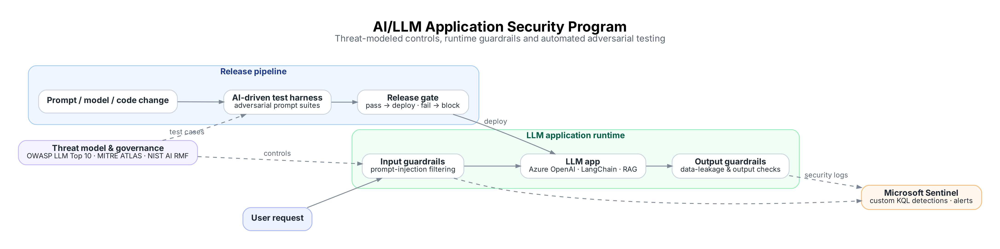

Threat-modeled controls, runtime guardrails and automated adversarial testing for LLM-powered applications at a biotech company.

The company was moving LLM features built on Azure OpenAI and LangChain into production, including agentic and retrieval-augmented (RAG) workflows. I built the security program around them, starting from a threat model rather than a tool list.
Threats were mapped to the OWASP LLM Top 10 and MITRE ATLAS, and controls to the NIST AI RMF. Runtime guardrails filter inputs for prompt injection and check outputs for sensitive data leakage and unsafe content before it reaches users or downstream systems.
An AI-driven test harness runs adversarial prompt suites against every prompt, model and code change in CI/CD, so regressions are caught before release. Guardrail events feed custom KQL detections in Microsoft Sentinel for real-time alerting.